第11章 数据分析
利用历史数据预测未来，再根据预测作出决定，可以为决策任务带来显著益处。例如，在线广告系统需要决定向每位用户展示哪则广告。分析其他用户的历史行为和画像，以及当前用户的历史行为和画像，是判断该用户最可能对哪则广告作出响应的重要依据。这里每次决策的价值较低，但数量庞大，正确决策的总价值就很高。在价值规模的另一端，制造商和零售商需要在实际销售前数月决定生产或储备哪些商品。根据历史销售和其他指标预测各类商品的未来需求，是避免某些商品生产或库存过多、另一些商品生产或库存不足的重要手段。判断失误可能导致商品滞销带来的资金损失，也可能因缺货而损失潜在收入。
数据分析（data analytics）广义上指处理数据，从中推断模式、相关性或预测模型，再用分析结果指导业务决策。
正确决策可能带来可观的经济收益，错误决策也可能造成高昂代价。组织因而投入大量资金，收集或购买所需数据，并构建数据分析系统。
11.1 数据分析概述
大型公司需要使用各种来源的数据作出业务决策，不同来源可能采用不同模式存储数据。出于性能和组织管控方面的原因，数据源通常不允许公司其他部门随时按需读取数据。
组织通常将多个来源的数据集中到一个位置，称为数据仓库。数据仓库在一个站点中按统一模式汇集多个来源的数据；其模式通常为高效分析而设计，即使需要冗余存储也可以接受。这样，用户就得到一个统一的数据访问接口。不过，如今的数据仓库也会收集和保存非关系型来源的数据，此时可能无法统一模式。某些数据源存在错误，可以借助业务约束发现并修正；组织从多个来源收集的数据之间也可能重复。收集数据、清洗和去重、再装入数据仓库的过程称为抽取、转换和装载（extract, transform and load，ETL）任务。11.2节研究构建和维护数据仓库的问题。
数据分析最基本的形式，是生成聚合结果和报表，以对组织有意义的方式汇总数据。分析人员需要取得多种聚合结果并比较，以理解数据中的模式。聚合结果，有时也包括底层数据，通常通过图表呈现，便于人观察。展示销售额、费用、退货等组织主要指标的仪表板，是常见的经营状况监控工具。分析人员还需要通过可视化突出异常，或了解业务变化的原因。
能够近乎实时回答海量数据聚合查询的高效分析系统很受分析人员欢迎，因为无需等待几十分钟乃至数小时。这类系统称为联机分析处理（online analytical processing，OLAP）系统。11.3节介绍OLAP，包括多维数据概念、OLAP操作，以及多维汇总的关系表示，也讨论数据的图形表示和可视化。
统计分析是数据分析的重要组成部分。专门用于统计分析的工具包括开源的R语言与环境，以及SAS、SPSS等商业系统。R如今广泛使用，除统计分析功能外，也支持图形化显示数据。大量R包，即程序库，实现了多种数据分析任务，其中包括许多机器学习算法。R已与数据库及Apache Spark等大数据系统集成，使R程序能够在大型数据集上并行执行。统计分析本身是一个庞大的领域，本书不再展开。更多资料见本章末尾的“进一步阅读”。
各类预测是数据分析的另一个重要方面。例如，银行需要决定是否向申请人发放贷款，在线广告商需要决定向某位用户展示哪则广告，制造商和零售商需要决定生产或订购哪些商品及其数量。
这些决策在很大程度上依靠分析历史数据并据此预测未来的技术。例如，贷款违约风险可以这样预测：银行先研究以往客户的违约历史，找出有助于预测违约的重要特征，例如工资、教育程度和工作经历，再用选定特征建立预测模型，例如本章稍后介绍的决策树。当客户申请贷款时，将其特征输入模型，得到违约可能性等预测结果，再据此决定是否发放贷款。
同样，分析人员可以根据历史销售预测未来销量，决定生产或订购什么、数量多少，以及如何定向投放广告。例如，汽车公司可以寻找有助于预测不同车型购买者的客户属性。公司可能发现，其小型跑车大多由年收入超过50,000美元的年轻女性购买，于是将营销重点放在吸引更多这类女性上，避免浪费资金向其他人群推销这些车型。
机器学习技术是发现数据模式并据此预测的重要方法。数据挖掘结合了机器学习研究者提出的知识发现技术和高效实现技术，使这些方法能够用于规模极大的数据库。11.4节讨论数据挖掘。
商业智能（business intelligence，BI）的含义与数据分析大体相近。决策支持（decision support）的含义相关但较窄，侧重报表和聚合，不包括机器学习或数据挖掘。决策支持任务通常使用SQL处理大量数据；联机事务处理中的每个查询则通常只读取少量数据，并可能执行少量小规模更新。
11.2 数据仓库
大型组织内部结构复杂，各类数据可能分布在不同地点、不同业务系统中，或采用不同模式。例如，生产问题数据与客户投诉数据可能保存在不同数据库系统。组织也经常购买外部数据，例如用于产品推广的邮寄名单，或征信机构提供的客户信用评分，用于判断客户信用状况。1
企业决策者需要访问多个此类来源的信息。分别对各个数据源建立查询既繁琐又低效。此外，数据源可能只保留当前数据，而决策者还需要历史数据；例如，过去几年购买模式如何变化，可能十分重要。数据仓库为这些问题提供了解决方法。
数据仓库是在单一站点按统一模式保存多来源信息的存储库或档案库。收集后，数据长期保留，供用户访问历史信息。数据仓库为用户提供统一、整合的数据接口，使决策支持查询更容易编写。此外，通过数据仓库读取决策所需信息，可以避免决策支持负载影响联机事务处理系统。
11.2.1 数据仓库的组成部分
图11.1展示典型数据仓库的架构，包括数据收集、存储，以及查询和分析支持。构建数据仓库时，需要处理以下问题：
- 何时以及如何收集数据。 在源驱动的数据收集架构中，数据源持续地随事务处理发送新信息，或定期发送，例如每夜一次。在目标驱动的架构中，则由数据仓库定期向数据源请求新数据。
除非源端更新同步复制到仓库，仓库就无法始终与数据源保持最新一致。同步复制成本可能很高，因此许多仓库不用这种方式，只查询足够早、已经复制完整的数据。传统上，分析人员接受使用前一天的数据，仓库只需装入截至前一天结束时的数据。但组织越来越希望得到更新的数据。新鲜度要求依应用而异：有些应用可以接受几小时前的数据；需要实时响应事件的应用，则可能采用10.5节介绍的流处理基础设施。
- 采用什么模式。 独立构建的数据源很可能采用不同模式，甚至不同数据模型。仓库的一项任务是集成模式，在存储前把数据转换到集成后的模式。因此，仓库中的数据并非数据源的简单副本，可以将其视为源数据的物化视图。
- 数据转换与清洗。 修正和预处理数据的任务称为数据清洗。数据源通常含有许多可修正的小问题，例如姓名拼写错误，地址中的街道、区域或城市名拼写错误，以及邮政编码录入错误。查询各城市的街道与邮编数据库，可以在一定程度上修正这些问题。这项任务所需的近似数据匹配称为模糊查找（fuzzy lookup）。
从多个来源取得的地址列表可能有重复，需要通过合并清除（merge–purge），也称去重，予以消除。还可以把同一住户中多个人的记录归为一组，保证每户只邮寄一份材料，这称为住户归并（householding）。
除清洗外，数据转换还包括改变计量单位，或通过连接多个源关系转换到另一种模式。数据仓库通常提供图形化转换工具，以方框表示转换，以方框之间的边表示数据流向，条件方框可将数据路由到适当的后续转换步骤。
- 如何传播更新。 数据源关系的更新必须传播到仓库。如果仓库关系与源关系完全相同，传播很直接；否则，这基本上是视图维护问题，4.2.3节已经介绍，16.5节将进一步讨论。
- 汇总哪些数据。 事务处理系统产生的原始数据可能太大，无法全部在线保存。但只维护关系的聚合摘要，也能回答许多查询。例如，可以按商品名和类别保存服装销售总量，无需保存每次服装销售的全部数据。
将数据送入仓库的不同步骤称为抽取、转换、装载，即ETL任务。抽取指从数据源取得数据，装载指将数据装入仓库。在支持用户定义函数或MapReduce框架的新一代仓库中，也可以先抽取、再装载、最后转换，称为抽取、装载、转换，即ELT任务。ELT方式允许使用并行处理框架转换数据。
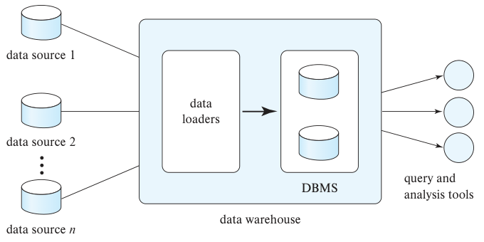
图中data source 1、2、n为不同数据源；data loaders为数据装载程序；DBMS为数据库管理系统；data warehouse为数据仓库；query and analysis tools为查询与分析工具。
图11.1 数据仓库架构。
11.2.2 多维数据与数据仓库模式
数据仓库通常采用面向数据分析设计的模式，供OLAP等工具使用。模式中的关系通常分为事实表和维表。事实表记录销售等单个事件的信息，规模通常很大。例如，零售店的销售表为每件售出的商品保存一个元组，就是典型事实表。事实表的属性分为维度属性和度量属性。度量属性保存可聚合的数量信息，销售表的度量属性包括售出数量与商品价格。维度属性则决定对度量值及其汇总结果按什么角度分组和查看。销售表的维度属性包括商品标识符、售出日期、销售地点（门店）、购买客户等。
能够用维度属性和度量属性描述的数据称为多维数据。
为尽量减少存储需求，维度属性通常使用较短的标识符，作为指向其他表的外键，这些其他表称为维表。例如，事实表sales包含维度属性item_id、store_id、customer_id和date，以及度量属性number和price。store_id是指向store维表的外键，该表还保存门店所在城市、州和国家等位置属性。sales的item_id指向item_info维表，其中包含商品名称、类别及颜色、尺码等细节。customer_id指向customer表，保存客户姓名、地址等属性。date也可以视为指向date_info表的外键，后者给出每个日期所属的月、季度和年份。
图11.2展示了这种模式。一个事实表连接多个维表，事实表的外键指向各维表，这种模式称为星型模式。更复杂的数据仓库设计可能有多层维表，例如item_info中的manufacturer_id可作为外键，指向另一个保存制造商详细信息的表。这类模式称为雪花模式。复杂仓库也可能包含多个事实表。
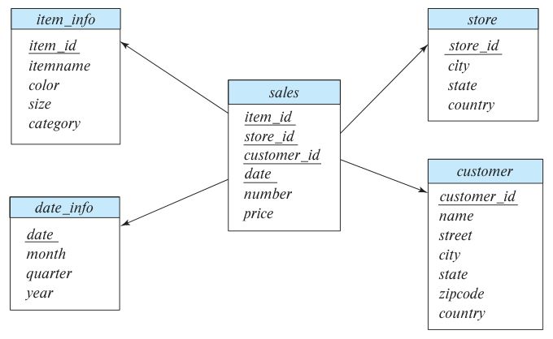
图中sales为销售事实表，item_info为商品信息，store为门店，customer为客户，date_info为日期信息。属性含义：item_id、store_id、customer_id分别为商品、门店、客户标识符；itemname为商品名，color为颜色，size为尺码，category为类别；number为数量，price为价格；name为姓名，street为街道，city为城市，state为州，zipcode为邮政编码，country为国家；date、month、quarter、year分别为日期、月、季度和年。
图11.2 数据仓库的星型模式。
11.2.3 数据库对数据仓库的支持
面向事务处理的数据库系统与面向数据仓库的系统需求有所不同。一个主要差异是，事务处理数据库需要支持大量小查询，既可能读取也可能更新；数据仓库的查询通常少得多，但每个查询访问的数据量大得多。
更重要的是，虽然仓库关系会插入新记录，也会删除不再需要的旧记录以腾出空间，但记录加入关系后通常不再更新。因此，数据仓库无需承担并发控制开销。第17章和第18章将介绍，并发事务读写相同数据可能使结果不一致；并发控制通过限制并发访问，确保数据库不会发生错误更新。并发控制不仅会增加查询处理时间，也可能增加存储开销，因为数据库经常保存多个版本，避免小型更新事务与长时间只读事务冲突。数据仓库不需要承担这些开销。
传统数据库把一个元组的所有属性放在一起，将元组顺序保存在文件中，这称为行式存储。列式存储则把关系的每个属性保存在单独文件中，连续元组的属性值存于文件的连续位置。假设数据类型长度固定，查找关系第i个元组的属性A时，只需访问A对应的文件，读取偏移量为(i − 1) × 属性A的值所占字节数处的值。
列式存储相较行式存储至少有两项主要优势：
- 当关系包含许多属性，而查询只需少数属性时，其余属性无需从磁盘读取到内存。行式存储会把无关属性也读入内存；如果它们与查询使用的属性相邻，还可能被预取到处理器缓存，浪费缓存空间和内存带宽。
- 同类型值集中存储可以提高压缩效果，从而显著减少磁盘存储成本和读取时间。
不过，列式存储也有缺点：存储或读取单个元组需要多次I/O。
基于这些取舍，列式存储在事务处理应用中使用不多，但已广泛用于数据仓库，因为后者很少单独访问某个元组，通常需要扫描并聚合多个元组。13.6节进一步介绍列式存储。
专门面向数据仓库的数据库实现包括Teradata、Sybase IQ和Amazon Redshift。许多传统数据库也通过增加列式存储等功能，高效支持数据仓库应用，包括Oracle、SAP HANA、Microsoft SQL Server和IBM DB2。
2010年代，对文件中数据执行查询的大数据系统迅速增长，如今已经成为数据仓库基础设施的重要组成部分。正如10.3节所述，这类系统的兴起源于在线系统生成的日志文件大量增加，其中包含许多可用于决策支持的信息。不过，这些系统也可以处理关系数据等任意类型的数据。Apache Hadoop就是其中之一，Hive允许在Hadoop上执行SQL查询。
Cloudera、Hortonworks等公司提供优化Hive查询处理的软件。Apache Spark是另一个常用大数据系统，支持对文件数据执行SQL查询。ORC、Parquet等保存带列记录的压缩文件结构越来越多地用于保存日志，简化了与SQL的集成。13.6节详细介绍这些格式。
11.2.4 数据湖
数据仓库十分重视统一模式，以便查询。但有些情况下，组织希望先保存数据，暂不承担建立统一模式并转换数据的成本。数据湖（data lake）指允许以多种格式存储数据的存储库，包括结构化记录和非结构化文件格式。数据湖无需预先完成数据预处理，但编写查询时需要更多工作。由于数据格式多样，查询工具也必须灵活。Apache Hadoop和Apache Spark同时支持非结构化与结构化数据查询，是查询这类数据的常用工具。
11.3 联机分析处理
数据分析经常需要以有意义的方式将数据值分组，寻找由此显现的模式。例如，按系汇总学分，可以了解哪些系的教学任务较多。在零售业务中，可以按商品、销售日期或月份、商品颜色或尺码，以及购买者的年龄段和性别等特征，将销售数据分组。
11.3.1 多维数据上的聚合
考虑一家商店想了解哪些服装受欢迎的应用。假设服装由商品名、颜色和尺码描述，有如下sales关系模式：
sales(item_name, color, clothes_size, quantity)
假设item_name取值为skirt、dress、shirt、pants，即裙子、连衣裙、衬衫和长裤；color取值为dark、pastel、white，即深色、淡色和白色；clothes_size取值为small、medium、large，即小号、中号、大号。quantity是整数，表示某个{item_name, color, clothes_size}组合对应商品的总数量。图11.3展示sales关系的一个实例。
统计分析经常需要按多个属性分组。sales中的quantity是度量属性，衡量售出件数；item_name、color和clothes_size是维度属性。更贴近实际的sales关系还会有时间、销售地点等维度，以及销售金额等额外度量。
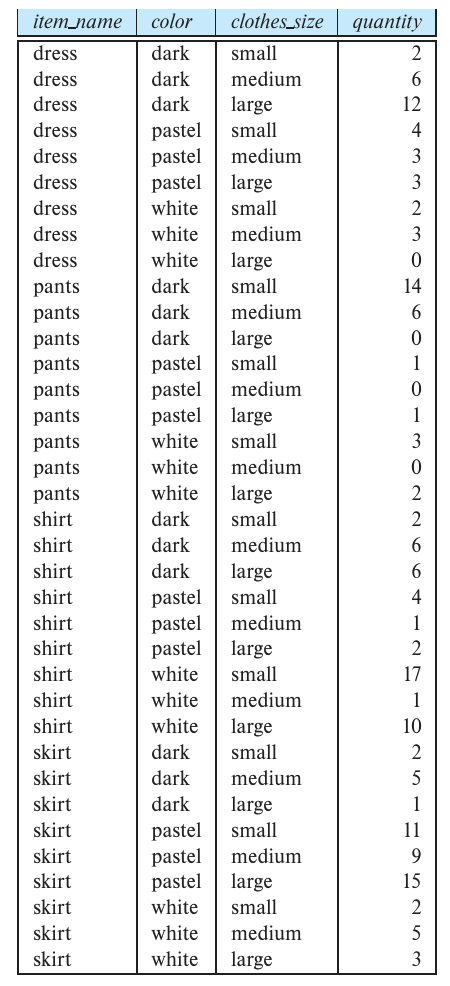
图11.3 sales关系实例。表中保留原始数据值；item_name为商品名，color为颜色，clothes_size为尺码，quantity为数量。
为了分析多维数据，经理可能希望按图11.4的方式展示数据。该表显示不同item_name与color组合的总数量。clothes_size指定为all，表示显示值汇总了该属性的所有取值，即把小号、中号和大号合并成一组。
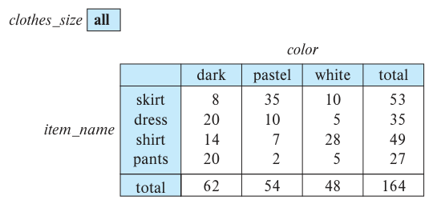
图11.4 按item_name和color交叉汇总sales。all表示全部尺码，total表示合计。
图11.4是一个交叉表（cross-tabulation，简称cross-tab），也称数据透视表（pivot-table）。一般来说，交叉表从关系R导出，以属性A的取值作为列标题，以另一个属性B的取值作为行标题。在图11.4中，A是color，其取值为dark、pastel、white；B是item_name，其取值为skirt、dress、shirt、pants。
透视表中的每个单元格可由(aᵢ, bⱼ)标识，其中aᵢ是A的值，bⱼ是B的值。单元格的值这样从R导出：若R中任意(aᵢ, bⱼ)组合最多对应一个元组，单元格就从该元组（如果存在）取得值，例如它的一个或多个其他属性值。若同一组合可能对应多个元组，就必须对这些元组聚合。本例对所有clothes_size取值上的quantity求和，正如图11.4上方的“clothes_size: all”所示。单元格(skirt, pastel)的值为35，因为sales中有3个元组符合条件，其值分别为11、9和15。
本例交叉表还有额外的一行和一列，保存各列与各行的合计。多数交叉表都有这类汇总行列。
把二维交叉表推广到n维，可以想象为一个n维立方体，称为数据立方体。图11.5展示sales的数据立方体，维度是item_name、color和clothes_size，度量属性是quantity。每个单元格由这三个维度的值标识，并像交叉表一样保存一个值。图中把值写在单元格的一个面上；其他可见的面留空。所有单元格都有值，即使图中看不到。某个维度也可以取all，此时单元格包含该维度所有取值上的汇总，与交叉表相同。
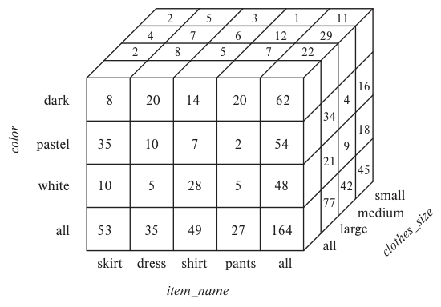
图11.5 三维数据立方体。三个轴分别为商品名、颜色、尺码；all表示沿该维度汇总。
用于聚合的分组方式可能很多。图11.5有3种颜色、4种商品、3种尺码，立方体大小为3 × 4 × 3 = 36。计入汇总值后，得到4 × 5 × 4的立方体，共80个单元格。对于具有n个维度的表，实际上可以按这n个维度的2ⁿ个子集分别分组聚合。2
OLAP系统允许分析人员交互选择交叉表中的属性，从不同交叉表查看同一份数据。每个交叉表都是多维数据立方体的一个二维视图。例如，可以选择按item_name与clothes_size交叉，也可以按color与clothes_size交叉。改变交叉表所用维度的操作称为转轴（pivoting）。
OLAP也允许固定clothes_size的某个值，例如large，查看item_name与color的交叉表，而不对全部尺码求和。这称为切片（slicing），可以理解为观察数据立方体的一个切面。当多个维度的值同时固定时，也常称为切块（dicing）。
用交叉表查看多维立方体时，不属于交叉表的维度属性值显示在表的上方。属性值可以是图11.4中的all，表示对该属性全部取值汇总。切片或切块就是为这些属性选择具体值，再显示在交叉表上方。
OLAP允许用户按所需粒度查看数据。通过聚合，从较细粒度转到较粗粒度的操作称为上卷（rollup）。本例从sales数据立方体沿clothes_size上卷，得到前面的交叉表。相反，从较粗粒度进入较细粒度的操作称为下钻（drill down）。无法从粗粒度数据生成细粒度数据，必须使用原始数据或粒度更细的汇总数据。
分析人员可能希望从不同详细程度查看一个维度。例如，datetime属性包含日期和一天中的时间。精确到秒甚至更细可能没有意义：关心一天中大致时段的人员只看小时；关心星期几销售情况的人员把日期映射为星期；其他人员可能关心月、季度或全年的聚合。
属性的不同详细程度可以组织成层次结构。图11.6a展示datetime的层次；图11.6b展示地点层次，底层是城市，其上依次为州、国家和地区。在服装示例中，还可以按男装、女装等类别分组，使category位于item_name之上。具体而言，skirt和dress属于女装，pants和shirt属于男装。
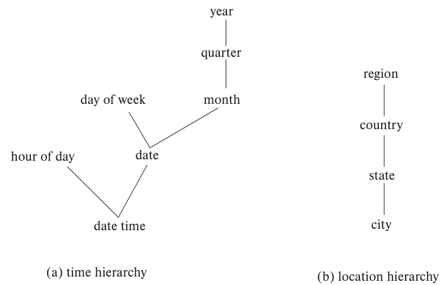
图11.6 维度层次。（a）时间层次：日期时间可分为小时和日期，日期可分为星期几或月份，月份之上为季度和年份。（b）地点层次：城市、州、国家、地区。
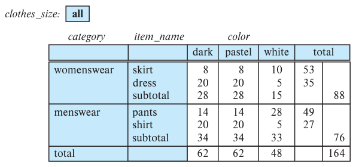
图11.7 在item_name上带有类别层次的sales交叉表。womenswear为女装，menswear为男装，subtotal为小计，total为总计。
译注：原书此图的数值与图11.4多处不一致，且pants与shirt的行名和合计对应错位；此处保留原图数据，不据此重新计算。
分析人员可能只想按男装和女装查看销量，不关心具体商品。在看完这两个类别的聚合后，可以沿层次下钻，查看具体商品；也可以从详细层次上钻，查看较粗粒度的聚合。两种层次可以像图11.7一样显示在同一交叉表中。
11.3.2 交叉表的关系表示
交叉表与数据库通常保存的关系表不同，其列数依赖实际数据。数据值变化可能导致增加列，不适于数据存储，但交叉表视图适于展示给用户。没有汇总值的交叉表很容易表示为固定列数的关系。包含汇总行列的交叉表，可以引入特殊值all表示小计，如图11.8。SQL标准实际使用null代替all，但为避免与普通空值混淆，本书继续使用all。
考虑元组(skirt, all, all, 53)和(dress, all, all, 35)。它们通过合并具有不同color和clothes_size值的单个元组，并将quantity替换为数量总和而得到。all可以理解为该属性的所有值构成的集合。对sales按item_name分组聚合，可得到color与clothes_size均为all的元组。同样，按color、clothes_size分组，可得到item_name为all的元组；不指定任何分组属性（在SQL中可以直接省略group by），可得到三个维度全部为all的元组。
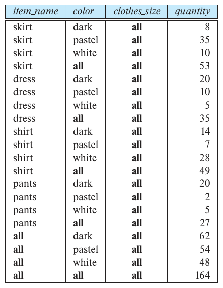
图11.8 图11.4数据的关系表示。all代表对相应维度所有值的汇总。
层次也可以用关系表示。例如，裙子和连衣裙属于女装、长裤和衬衫属于男装，可以表示为itemcategory(item_name, category)关系。将其与sales连接，就能得到包含每件商品类别的关系；在连接结果上聚合，就能生成带层次的交叉表。类似地，城市层次可以用单个关系city_hierarchy(ID, city, state, country, region)表示，也可以用多个关系，每个关系把某一层的值映射到下一层。这里假设城市具有保存在ID属性中的唯一标识符，避免混淆同名城市，例如密苏里州的Springfield和伊利诺伊州的Springfield。
11.3.3 SQL中的OLAP
使用OLAP的分析人员需要交互式获得多个聚合结果，不能等待数分钟或数小时。这最初推动了专用OLAP系统的发展，见注11.1。如今，许多数据库已实现OLAP，并提供表达OLAP查询的SQL结构。正如5.5.3节所述，Microsoft SQL Server和Oracle等实现支持用pivot子句创建交叉表。对图11.3的sales关系，执行：
select *
from sales
pivot (
sum(quantity)
for color in ('dark','pastel','white')
)
order by item_name;
得到图11.9的交叉表。pivot中的for子句列出color的取值，它们成为结果中的属性名。color本身不再出现，其他属性保留；新属性的值来自quantity。如果多个元组为同一个单元格提供值，pivot中的聚合操作决定如何合并，本例将quantity相加。
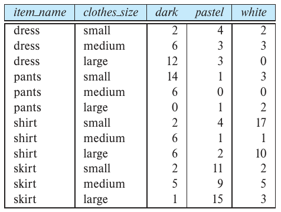
图11.9 对图11.3的sales关系执行SQL pivot的结果。 表中item_name为商品名、clothes_size为尺码；dark、pastel、white分别为深色、淡色、白色，各单元格为数量。
pivot本身不计算图11.4中的小计。但可以先用稍后介绍的cube操作生成图11.8的关系表示，再对它应用pivot，得到等价结果。此时for中还须列出all，并修改order by，使all排在最后。
仅用基本group by，无法用单个SQL查询生成数据立方体，因为需要按维度属性的多种组合分别聚合。必须编写多个查询，再用union合并。SQL提供特殊语法，能够简洁地指定多个group by操作。
注11.1 OLAP的实现
最早的OLAP系统在内存中使用多维数组保存数据立方体，称为多维OLAP（MOLAP）系统。后来，OLAP功能集成到关系系统，数据保存在关系数据库中，称为关系OLAP（ROLAP）系统。还有混合系统，在内存中保存部分汇总，在关系数据库中保存基础数据和其他汇总，称为混合OLAP（HOLAP）系统。
许多OLAP系统采用客户端—服务器结构。服务器包含关系数据库及MOLAP数据立方体，客户端通过与服务器通信取得数据视图。
计算关系的完整数据立方体，即所有分组，一种简单方法是每次用标准聚合算法计算一个分组。这需要扫描关系很多次。一种简单优化是从(item_name, color, clothes_size)的聚合结果计算(item_name, color)聚合，无需从原始关系重新计算。从一个聚合结果推导另一个，可以显著减少读取数据量。还可以进一步优化，例如一次扫描同时计算多个分组。
早期OLAP预先计算并保存完整数据立方体，也就是维度属性所有子集上的分组结果。即使数据集含数百万个元组、总量达到数GB，预计算也能使查询在数秒内得到答案。但n个维度有2ⁿ种分组，属性层次还会增加数量，因此完整立方体往往比原始关系更大，许多情况下无法全部存储。
合理的做法是预计算并存储部分分组，其余按需计算。可以利用已有预计算结果，避免从原始关系耗时地计算。例如，查询需要按(item_name, color)分组但该组合尚未预计算，而(item_name, color, clothes_size)已有汇总，就可以从后者算出查询结果。关于如何在存储空间限制下选择合适的预计算分组，参见文献说明。
正如5.5.4节所述，SQL扩展group by以支持cube和rollup。这两个结构允许在单个查询中执行多个分组，并以一个关系返回结果，形式类似图11.8。
再次考虑零售店示例中的关系：
sales(item_name, color, clothes_size, quantity)
要用独立的group by查询生成整个立方体，需要针对以下8组属性分别查询：
{ (item_name, color, clothes_size), (item_name, color),
(item_name, clothes_size), (color, clothes_size),
(item_name), (color), (clothes_size), () }
其中()表示空的分组属性列表。
5.5.4节介绍的cube允许用一个查询完成：
select item_name, color, clothes_size, sum(quantity)
from sales
group by cube(item_name, color, clothes_size);
查询生成的关系模式为：
(item_name, color, clothes_size, sum(quantity))
为了使结果构成一个关系，某种分组中不存在的属性在结果元组中填入null。例如，只按clothes_size分组得到模式(clothes_size, sum(quantity))；给item_name和color补上null后，就转换为完整结果模式。
数据立方体关系经常很大。前面cube查询有3种颜色、4种商品名、3种尺码，结果包含80个元组。图11.8的关系可以通过对item_name和color执行group by cube，并在select中增加一列将clothes_size设为all生成。
为得到该关系，需要按5.5.4节介绍的方法，用grouping函数把相应null替换为all。grouping能够区分OLAP操作生成的null与数据库中原有或外连接产生的普通null。
grouping在参数是cube或rollup生成的null时返回1，否则返回0。再用case表达式即可将OLAP生成的null替换为all。图11.8的关系可以由以下查询得到：
select case when grouping(item_name) = 1 then 'all'
else item_name end as item_name,
case when grouping(color) = 1 then 'all'
else color end as color,
'all' as clothes_size, sum(quantity) as quantity
from sales
group by cube(item_name, color);
rollup与cube类似，但生成的group by查询更少。前面的group by cube(item_name, color, clothes_size)生成使用部分、全部或零个属性的全部8种分组。以下查询：
select item_name, color, clothes_size, sum(quantity)
from sales
group by rollup(item_name, color, clothes_size);
只生成4种分组：
{ (item_name, color, clothes_size), (item_name, color), (item_name), () }
rollup中属性顺序会影响结果。最后一个属性，本例为clothes_size，只出现于一个分组；倒数第二个出现于两个分组，依此类推；第一个属性出现在除空分组外的所有分组中。
为什么需要rollup中的这些分组？它们常用于图11.6那样的层次结构。对于地点层次(Region, Country, State, City)，可以先按Region查看地区销量，再下钻到每个地区内的国家，即按Region、Country分组；继续下钻到州，再到城市。rollup允许指定这一逐步查看细节的分组序列。
正如5.5.4节所述，同一个group by中可以使用多个rollup和cube。例如：
select item_name, color, clothes_size, sum(quantity)
from sales
group by rollup(item_name), rollup(color, clothes_size);
生成以下分组：
{ (item_name, color, clothes_size), (item_name, color), (item_name),
(color, clothes_size), (color), () }
原因是rollup(item_name)生成{(item_name), ()}两种分组，rollup(color, clothes_size)生成{(color, clothes_size), (color), ()}三种分组，二者的笛卡儿积给出上述6种组合。
rollup和cube都不能完全控制生成哪些分组。例如，无法仅指定{(color, clothes_size), (clothes_size, item_name)}。这时可使用grouping sets，明确列出所需分组：
select item_name, color, clothes_size, sum(quantity)
from sales
group by grouping sets ((color, clothes_size), (clothes_size, item_name));
还有专门查询多维OLAP模式的语言，使某些常见任务比使用SQL更容易表达，例如Microsoft开发的MDX和DAX查询语言。
11.3.4 报表与可视化工具
报表生成器从数据库生成便于人阅读的汇总报告，将数据库查询与格式化文本和汇总图表结合起来，例如柱状图或饼图。报表可以显示过去两个月中，每个销售区域各月的总销售额。
应用开发者使用报表生成器的排版功能指定格式，使用变量保存月份、年份等参数并定义报表字段。表格、图形、柱状图等通过数据库查询定义，查询可以使用变量中的参数值。
定义报表结构后，可以保存它，随时执行生成报表。报表生成器提供多种表格排版功能，例如定义表头和列标题、显示各组小计、将长表自动分页，以及显示每页小计。
图11.10展示一个格式化报表，数据通过对订单信息聚合生成。
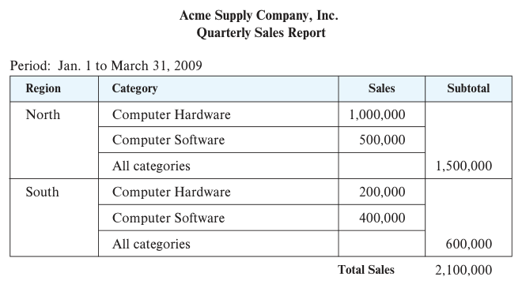
图11.10 格式化报表。Acme Supply Company, Inc.季度销售报告，期间为2009年1月1日至3月31日。Region为区域，Category为类别，Sales为销售额，Subtotal为小计，Total Sales为销售总额；North为北部，South为南部，Computer Hardware为计算机硬件，Computer Software为计算机软件，All categories为所有类别。
许多供应商提供报表工具，例如SAP Crystal Reports和Microsoft SQL Server Reporting Services。Microsoft Office等应用套件允许把数据库查询的格式化结果直接嵌入文档。Crystal Reports或Excel等电子表格的图表功能，可以访问数据库并生成数据表或图形化图表，再嵌入文本文档。图表最初来自数据库查询结果，需要时可以重新执行查询、重新生成图表，更新整个报表。
超出基本图表类型的数据可视化技术，对数据分析十分重要。可视化系统帮助用户观察大量数据，凭视觉发现模式。地图、图表等图形表示可以紧凑地呈现信息；一屏图形可以呈现需要许多文本屏幕才能容纳的信息。
例如，要判断某种疾病与患者所在地是否相关，可以在地图上用红色等特殊颜色标出患者位置，迅速发现病例集中地区。用户随后可以对这些地区出现问题的原因提出假设，再使用数据库定量验证。
另一个例子是用颜色表示数值，显示面积可以小到一个像素。要检测商品对之间的关联，可用二维像素矩阵，每行和每列代表一种商品，以像素颜色强度表示同时购买两种商品的交易占比。关联较强的商品对显示为亮像素，在较暗背景中容易发现。
近年来出现了许多基于Web的数据可视化和仪表板工具，可以用多张图表展示组织的重要信息，包括Tableau（www.tableau.com）、FusionCharts（www.fusioncharts.com）、plotly（plot.ly）、Datawrapper（www.datawrapper.de）和Google Charts（developers.google.com/chart）等。它们使用HTML和JavaScript显示，可用于多种浏览器和移动设备。
交互是可视化的重要组成部分。例如，用户可以对感兴趣的区域下钻，从全年销售额的汇总视图进入某年的逐月销量。分析人员也可能希望交互地添加选择条件，观察数据子集。Tableau等工具提供丰富的交互可视化功能。
11.4 数据挖掘
数据挖掘泛指分析大型数据库、寻找有用模式的过程。与人工智能中的知识发现（也称机器学习）和统计分析一样，数据挖掘试图从数据中发现规则与模式。它与传统机器学习和统计方法的区别，在于处理主要保存在磁盘上的海量数据。如今许多机器学习算法也处理海量数据，两者的界限逐渐模糊。数据挖掘技术是数据库知识发现（knowledge discovery in databases，KDD）过程的一部分。
从数据库发现的某些知识可以用一组规则表示。例如，非正式地说：“年收入超过50,000美元的年轻女性最有可能购买小型跑车。”当然，这类规则并非普遍正确，而具有一定的支持度和置信度，稍后介绍。其他知识可以用联系不同变量的方程表示。更一般地，利用机器学习从数据库历史实例中发现的知识表示为模型，用于预测新实例的结果。实例的特征或属性是模型输入，模型输出是预测。
可能有用的模式有多种类型，需要用不同技术发现。本节介绍几类模式，以及如何从数据库自动获得它们。
数据挖掘通常也包含人工环节：预处理数据，使其适合算法；后处理发现的模式，寻找新颖且可能有用的模式。一个数据库可能发现多类模式，也需要人工交互选出有用的类型。因此，实际的数据挖掘是半自动过程。本书主要关注自动挖掘部分。
11.4.1 数据挖掘任务的类型
应用最广泛的数据挖掘任务需要某种预测。例如，申请信用卡时，发卡公司希望预测申请人的信用风险，依据包括年龄、收入、负债和过去还款历史。预测规则来自过去与当前持卡人的相同属性，以及他们是否拖欠信用卡欠款等实际表现。其他预测包括哪些客户可能转向竞争对手（可以提供特殊折扣挽留）、哪些人可能响应促销邮件，以及哪些电话卡使用方式可能涉及欺诈。
另一类应用寻找关联，例如经常一起购买的书籍。客户买一本书时，在线书店可以推荐相关书籍；客户买相机时，系统可以推荐经常与相机一起购买的配件。优秀销售人员了解并利用这些模式增加销售，技术挑战是将这一过程自动化。某些关联还可能帮助发现因果关系。例如，一种新药与心脏问题之间出现意外关联，促使人们发现该药可能导致部分人发生心脏问题，随后该药被撤市。
关联是一类描述性模式，簇也是如此。例如，一个多世纪前，人们发现伤寒病例集中在某口水井周围，进而发现井水遭污染并传播伤寒。疾病聚集的检测至今仍很重要。
11.4.2 分类
抽象地说，分类问题是：已知对象属于若干类别之一，并给出历史对象实例（称为训练实例）及其所属类别，预测一个新对象的类别。新实例的类别未知，因此必须利用其其他属性预测。
例如，信用卡公司想决定是否向申请人发卡。公司掌握该人的年龄、教育背景、年收入、当前负债等多种信息，可以用于决策。
为此，公司选取一组现有或过去客户，根据其还款历史，分别赋予excellent、good、average或bad，即优秀、良好、一般或较差信用等级。这些实例构成训练实例集。
随后，公司尝试学习规则或模型，根据新申请人的其他信息将其信用状况分为上述类别。新客户尚无实际还款历史，不能使用这一信息。本节概述几种分类技术。
11.4.2.1 决策树分类器
决策树分类器是广泛使用的分类技术。它采用树结构，每个叶节点关联一个类别，每个内部节点关联一个谓词，或更一般的函数。图11.11给出示例。为简化说明，只使用教育程度（最高学位）和收入两个属性。
分类新实例时，从根开始遍历至叶节点。在内部节点上，对实例数据计算谓词或函数，决定进入哪个子节点，直到抵达叶节点。例如，某人的学位为硕士，收入为40K，从根沿masters边进入，再沿25K到75K边到达叶节点。叶节点类别为good，因此预测此人信用等级为良好。
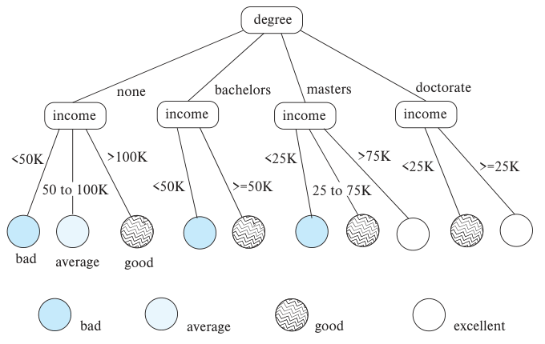
图11.11 分类树。degree为学位，income为收入；none为无学位，bachelors为学士，masters为硕士，doctorate为博士；bad、average、good、excellent分别为较差、一般、良好、优秀，K表示千。
从给定训练集构建决策树有多种技术，这里省略细节，更多信息见“进一步阅读”。
11.4.2.2 贝叶斯分类器
贝叶斯分类器从训练数据中求出各类别属性值的分布。给定新实例d，利用这些分布估计d属于每个类别cⱼ的概率，记为p(cⱼ|d)，选取概率最大的类别作为预测结果。
贝叶斯分类器使用贝叶斯定理计算这个概率：
p(cⱼ|d) = p(d|cⱼ) × p(cⱼ) / p(d)
其中p(d|cⱼ)是在给定类别cⱼ时产生实例d的概率，p(cⱼ)是类别cⱼ出现的概率，p(d)是实例d出现的概率。p(d)对于所有类别相同，可以忽略。p(cⱼ)就是训练实例中属于cⱼ的比例。
例如，只使用income属性分类，要判断收入为76,000的人属于哪类。假设收入值已分桶，76,000所在桶的范围为(75,000, 80,000)。在excellent类中，收入处于该范围的概率为0.1；在good类中为0.05。又假设总体中excellent占0.1，good占0.3。于是excellent的p(d|cⱼ)p(cⱼ)为0.01，good为0.015，因此此人归为good。
通常分类需要多个属性，此时很难准确求p(d|cⱼ)，因为必须知道cⱼ实例在所有分类属性值组合上的分布。收入桶、学位及其他属性组合的数量可能非常大。训练集有限时，多数组合甚至没有一个匹配实例，会导致错误分类。为避免这一问题并简化分类，朴素贝叶斯分类器假设属性分布相互独立，估计：
p(d|cⱼ) = p(d₁|cⱼ) × p(d₂|cⱼ) × ⋯ × p(dₙ|cⱼ)
即给定类别cⱼ时，实例d出现的概率是其各属性值dᵢ出现概率的乘积。
p(dᵢ|cⱼ)来自各类别中属性i的值分布，根据属于cⱼ的训练实例计算，通常用直方图近似。例如，将属性i的值域分成等长区间，保存cⱼ实例落在每个区间的比例。给定属性值dᵢ，p(dᵢ|cⱼ)就是该类实例落在dᵢ所属区间的比例。
11.4.2.3 支持向量机分类器
支持向量机（Support Vector Machine，SVM）在多种应用中表现出很高的分类准确性。这里介绍其基本思想，更多内容见文献说明。
可以从几何角度理解SVM。最简单的情况是二维平面上的一组点，部分属于A类，部分属于B类。给定已知类别的训练点，需要建立新点的分类器。图11.12中，A类点用X表示，B类用O表示。
假设平面上可以画出一条直线，使所有A类点位于一侧，所有B类点位于另一侧，就可以用这条线分类未知类别的新点。但能分开两类点的直线可能很多，图11.12展示了其中几条。SVM选取到两类训练点中最近点的距离最大的那条线，称为最大间隔线。新点位于线的哪一侧，就归为相应类别。图中最大间隔线用粗实线表示，其他线用虚线表示。
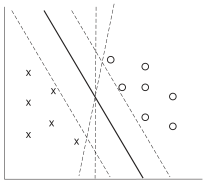
图11.12 支持向量机分类器示例。X与O表示两个类别，粗实线为最大间隔线，虚线为其他候选分隔线。
这个直观思想可以推广到更高维，使用多个属性分类，此时寻找的是分隔平面。进一步，通过核函数对输入点先行变换，SVM可以找到分隔点集的非线性曲线。这对无法用直线或平面分开的点集十分重要。存在噪声时，一类中的某些点可能落在另一类点之间，无法找到完全分开两类的直线或有意义的曲线；此时选择分类最准确的直线或曲线。
SVM的基本形式是只有两个类别的二分类器，也可用于多分类：若有N类，构建N个分类器，第i个区分点是否属于第i类。对给定点，每个分类器还输出一个值，表示该点与其类别的相关程度。应用全部N个分类器后，选取相关程度最高的类别。
11.4.2.4 神经网络分类器
神经网络分类器用训练数据训练人工神经网络。相关文献十分丰富，本书不展开细节，只概述若干主要特征。
神经网络由多层“神经元”构成，每个神经元连接前一层的神经元。问题实例输入第一层，每一层的神经元根据前一层的输入经某个函数计算后“激活”。每个神经元计算输入神经元激活值的加权组合，再据此产生输出。因此，一层神经元的激活会影响下一层。最终输出层通常为分类问题的每个类别设置一个神经元，对给定输入，激活值最大的神经元决定预测类别。
上述计算中的权重决定神经网络能否有效工作。权重根据训练数据学习，初始设为某些默认值，再使用训练数据调整。通常，将每个输入送入当前网络并检查预测是否正确；若错误，就用反向传播算法调整神经元权重，使当前输入的预测更接近正确结果。重复这一过程，得到训练后的网络，便可分类新的输入。
近年来，神经网络在过去认为很困难的任务上取得了很大进展，包括视觉（例如识别图像中的物体）、语音识别和自然语言翻译。一个简单视觉任务是给定动物图像，识别其物种，例如猫或狗，这基本上是分类问题。其他例子包括识别图像中出现的各个物体，并为它们分别赋予类别标签。
具有大量层的深度神经网络，在训练实例足够多时，已经在这些任务上取得成功。深度学习指创建这类网络、并用大量实例训练它们的机器学习技术。
11.4.3 回归
分类预测类别，回归预测数值。给定变量X₁、X₂、…、Xₙ的值，希望预测变量Y。例如，可以将教育程度和收入分别表示为数值，再据此预测违约的可能性，用违约概率百分比或违约涉及金额表示。
一种方法是推断系数a₀、a₁、a₂、…、aₙ，使得：
Y = a₀ + a₁ × X₁ + a₂ × X₂ + ⋯ + aₙ × Xₙ
寻找这样的一次多项式称为线性回归。更一般地，我们希望找到一条由多项式或其他公式定义、能够拟合数据的曲线，这个过程也称曲线拟合。
由于数据有噪声，或变量关系并不严格满足某个多项式，拟合可能只是近似的。回归的目标是寻找尽可能好地拟合数据的系数。统计学中有求回归系数的标准方法，本书不展开，参考资料见文献说明。
11.4.4 关联规则
零售商经常关注人们购买的不同商品之间的关联，例如：
- 买面包的人很可能也买牛奶。
- 买《数据库系统概念》的人很可能也买《操作系统概念》。
关联信息有多种用途。网上书店可以在客户买某本书时推荐相关书籍。食品店可以把面包与牛奶放在一起，帮助顾客更快完成采购；也可以把二者放在一排货架两端，中间摆其他相关商品，引导顾客在来回走动时增加购买。对其中一种商品打折时，商店可能不给另一种打折，因为客户很可能仍会购买它。
一个关联规则示例是：
bread ⇒ milk
在食品店购物语境中，它表示买面包的客户也有较高概率买牛奶。关联规则必须对应一个由实例集合构成的总体。食品店的总体可以是全部购物交易，每次购买是一个实例。书店的总体则可以是所有购买过商品的人，不论购买时间，每位客户是一个实例。书店的分析人员认为购买时间不重要；食品店的分析人员则可能只关注单次交易，忽略同一客户多次到店的情况。
规则具有支持度和置信度，均相对于总体定义：
- 支持度衡量总体中同时满足规则前件和后件的比例。
例如，若只有0.001%的购买同时包含牛奶和螺丝刀，则规则：
milk ⇒ screwdrivers
支持度很低，甚至可能没有统计意义，也许只有一笔交易同时包含两者。企业通常不关心低支持度规则，因为涉及客户很少，不值得投入精力。
如果50%的购买同时包含牛奶和面包，则只涉及这两种商品的规则支持度较高，可能值得关注。可接受的最低支持度依应用而定。
- 置信度衡量前件为真时后件为真的频率。例如：
bread ⇒ milk
如果包含面包的购买中有80%也包含牛奶，该规则置信度就是80%。低置信度规则没有意义。在商业应用中，置信度通常明显低于100%；在物理学等其他领域，规则可能具有很高置信度。
bread ⇒ milk与milk ⇒ bread的置信度可能相差很大，但支持度相同。
11.4.5 聚类
直观上，聚类是在给定数据中寻找点簇。可用距离度量对其作多种形式化定义。一种定义是：给定k，将点分成k个集合，使各点到所属簇质心的平均距离最小。3 另一种定义是使每簇内部所有点对之间的平均距离最小。还有其他定义，详见文献说明。这些定义共有的直觉，是把相似点归到同一集合。
另一类聚类出现在生物分类系统中。这类系统把相关对象聚在一起，并不试图预测类别。例如，豹和人归于哺乳纲，鳄鱼和蛇归于爬行纲，二者又都属于脊索动物门。哺乳纲内部还有食肉目和灵长目等子簇。这形成层次聚类。生物学家根据物种特征构建复杂的层次聚类体系，在不同层次把相关物种归为一组。
统计学界对聚类已有广泛研究。数据库研究则提供了可扩展聚类算法，能够处理可能无法全部放入内存的超大数据集。
聚类的一项应用是根据以下信息预测一个人可能喜欢哪些新电影、书籍或音乐：
- 此人过去的电影偏好。
- 过去偏好相近的其他人。
- 这些人对新电影的偏好。
一种处理方式是按电影偏好对人聚类，寻找过去偏好相近的人。可以先按相似性对电影聚类，提高用户聚类的准确性：即使两个人没有看过同一部电影，只要看过相似电影，也可以被归到一起。可以交替对人、电影、再对人聚类，反复进行，直到达到平衡。给定新用户，依据其已看电影偏好，找出最相似的用户簇，再把该簇欢迎的电影簇中的电影预测为新用户可能感兴趣的内容。这属于协同过滤（collaborative filtering），即用户协作筛选信息，找到感兴趣的内容。
11.4.6 文本挖掘
文本挖掘把数据挖掘技术应用于文本文档，包含多种任务，例如情感分析。公司想了解用户对新产品的反应时，网上往往有大量评价，例如电子商务平台上的用户评论，人工逐条阅读并不现实。公司可以分析评论的情感，分为正面、负面或中性。excellent、good、awesome、beautiful等词与正面情感相关，awful、average、worthless、poor quality等词与负面情感相关。情感分析技术可以分析这些评论，给出反映整体评价倾向的分数。
另一项任务是信息抽取，从非结构化文字描述或文档表格等半结构化数据中创建结构化信息。其中一个重要子任务是实体识别，即识别文本提及的实体并消歧。例如，一篇文章提到Michael Jordan，但至少有两位知名人士使用这个名字：一位是篮球运动员，另一位是著名机器学习专家、大学教授。消歧就是判断文章具体指谁，可以利用上下文：体育文章中的名字可能指篮球运动员，机器学习论文中的名字可能指教授。实体识别后，还可以用其他技术学习实体属性及实体间的联系。
信息抽取有许多用途。例如，分析客服对话或社交媒体评价，判断客户满意度，决定何时需要干预以留住客户。服务提供者可能希望知道评价具体针对价格、质量、卫生还是服务人员行为表达正面或负面态度。信息抽取可以推断文章或其中一部分涉及哪个方面，以及对应情感；还可以提取服务地点等属性，帮助采取纠正措施。
从Web上庞大的文档及其他资源中抽取的信息，对许多任务都有价值。这些信息可以表示为知识图谱，8.1.4节已作概述。搜索引擎利用知识图谱，为用户查询生成更有意义的答案。
11.5 小结
- 数据分析系统分析事务处理系统收集的在线数据，以及其他来源的数据，帮助人们作出业务决策。决策支持系统有多种形式，包括OLAP和数据挖掘系统。
- 数据仓库收集并归档重要业务数据，用于历史数据分析与决策支持，例如预测趋势。输入数据清洗通常是一项主要任务。仓库模式通常是多维的，包含一个或少数几个很大的事实表，以及若干小得多的维表。
- OLAP工具帮助分析人员从不同汇总方式观察数据，了解组织运行情况。
- OLAP处理多维数据，数据由维度属性和度量属性描述。
- 数据立方体包含以不同方式汇总的多维数据。预计算数据立方体有助于加快汇总查询。
- 交叉表允许一次查看多维数据的两个维度及其汇总。
-
OLAP操作包括下钻、上卷、切片和切块。
-
SQL标准提供多种数据分析算子，包括cube、rollup和pivot。
- 数据挖掘是半自动分析大型数据库、发现有用模式的过程。应用包括根据历史实例预测数值、寻找购买关联，以及自动对人和电影聚类。
- 分类根据训练实例的属性及真实类别，使用测试实例的属性预测其类别。分类器包括以下类型：
- 决策树分类器：依据训练实例构建树，叶节点带类别标签。
- 贝叶斯分类器：基于概率论。
- 支持向量机：另一种广泛使用的分类技术。
- 神经网络，特别是深度学习：在视觉、语音识别、语言理解和翻译中的分类及相关任务上取得了成功。
- 关联规则识别经常共同出现的项目，例如同一客户往往一起购买的商品。相关性分析寻找实际关联程度对预期水平的偏离。
- 其他数据挖掘类型包括聚类和文本挖掘。
复习术语
- 决策支持系统；商业智能；数据仓库
- 数据收集
- 源驱动架构
- 目标驱动架构
- 数据清洗
- 抽取、转换、装载（ETL）
- 抽取、装载、转换（ELT）；仓库模式
- 事实表
- 维表
- 星型模式
- 雪花模式；列式存储；联机分析处理（OLAP）；多维数据
- 度量属性
- 维度属性
- 层次
- 交叉表与转轴
- 数据立方体
- 上卷与下钻
- SQL group by cube、group by rollup
- 数据可视化；数据挖掘；预测；分类
- 训练数据
- 测试数据
- 决策树分类器；贝叶斯分类器
- 贝叶斯定理
- 朴素贝叶斯分类器
- 支持向量机（SVM）；回归；神经网络；深度学习；关联规则；聚类；文本挖掘
- 情感分析
- 信息抽取
- 命名实体识别
- 知识图谱
练习题
11.1 比较数据仓库收集数据的源驱动架构和目标驱动架构，说明源驱动的优点与缺点。
11.2 画图说明附录A大学示例中的classroom关系如何采用列式存储。
11.3 考虑takes关系。编写SQL查询，生成交叉表：2017年、2018年各一列，另有all列；每门课程一行，另有all行。每个单元格包含相应年份选修相应课程的学生数，all列汇总全部年份，all行汇总全部课程。
11.4 对图11.2的数据仓库模式，编写SQL查询，按门店和日期及其层次汇总销售数量和价格。
11.5 分类可以用分类规则完成，每条规则包含条件、类别和置信度；置信度表示满足条件的输入中，属于指定类别的百分比。
例如，一条信用评级规则的条件是工资在30,000至50,000美元之间、教育程度为研究生，类别为good，置信度80%。第二条的条件是工资在同一范围、教育程度为高中，类别为satisfactory，置信度80%。第三条的条件是工资超过50,001美元，类别为excellent，置信度90%。画出对应决策树。
说明如何扩展决策树，以记录置信度。
11.6 考虑预测某人是否患有某种疾病的分类问题。假设95%的受测者没有患病。pos表示实际阳性比例，为5%；neg表示实际阴性比例，为95%。考虑以下分类器：
- C₁始终预测阴性，显然这是一个相当无用的分类器。
- C₂对实际患病者有80%预测阳性，对未患病者也有5%预测阳性。
- C₃对实际患病者有95%预测阳性，对未患病者也有20%预测阳性。
对每个分类器，t_pos表示真阳性比例，即预测阳性且实际患病的案例比例；f_pos表示假阳性比例，即预测阳性但实际未患病的比例。t_neg和f_neg分别为真阴性与假阴性比例，定义类似，但预测结果为阴性。
a. 为每个分类器计算以下指标：
- 准确率：
(t_pos + t_neg) / (pos + neg)，即分类正确的比例。 - 召回率，也称敏感度：
t_pos / pos，即实际阳性中被预测为阳性的比例。 - 精确率：
t_pos / (t_pos + f_pos)，即阳性预测正确的比例。 - 特异度：
t_neg / neg。
b. 若分类结果用于决定进一步筛查，如何选择分类器？
c. 若分类结果用于决定开始用药，且药物对未患病者可能有害，如何选择分类器？
习题
11.7 为什么列式存储在支持数据仓库的数据库系统中可能具有优势？
11.8 将takes和teaches分别视为事实表。它们没有显式度量属性，但假设各有一个值始终为1的reg_count度量属性。分别有哪些维度属性和维表？得到的模式是星型还是雪花模式？
11.9 考虑图11.2的星型模式。分析人员发现2018年4月至5月的月销售总额（全部sales元组price值之和）没有增长，反而下降，想检查是否由某些商品类别、门店或客户所在国家引起。
a. 应从哪些聚合开始，执行哪些相关下钻操作？
b. 编写SQL查询，列出导致销售额下降的商品类别，并按对下降的影响排序，影响最大的类别排在最前。
11.10 某服装店一半交易购买牛仔裤，三分之一交易购买T恤；买牛仔裤的交易中，一半也买T恤。写出可以推导的所有非平凡关联规则，并给出各自支持度和置信度。
11.11 一本书的篇、章、节和小节的组织方式与聚类有关。解释原因，并说明属于哪种聚类。
11.12 以喜爱的运动为例，说明运动队可以如何使用预测性挖掘技术。
工具
Teradata、Teradata Aster、SAP IQ（原名Sybase IQ）和Amazon Redshift提供数据仓库系统，均支持跨大量机器并行处理。Oracle、SAP HANA、Microsoft SQL Server和IBM DB2等数据库通过增加列式存储等功能支持仓库应用。商业ETL工具包括Informatica、Business Objects、IBM InfoSphere、Microsoft Azure Data Factory、Microsoft SQL Server Integration Services、Oracle Warehouse Builder和Pentaho Data Integration。开源ETL工具包括Apache NiFi（nifi.apache.org）、Jasper ETL（www.jaspersoft.com/data-integration）和Talend（sourceforge.net/projects/talend-studio）。Apache Kafka（kafka.apache.org）也可用于构建ETL系统。
多数数据库厂商将OLAP工具作为数据库的一部分或附加应用，包括Microsoft、Oracle、IBM和SAP。Mondrian（github.com/pentaho/mondrian）是开源OLAP服务器。Apache Kylin（kylin.apache.org）是开源分布式分析引擎，可处理Hadoop数据、构建OLAP立方体并存入HBase键值存储，再用SQL查询。许多公司还提供客户关系管理等特定应用的分析工具。
可视化工具包括Tableau（www.tableau.com）、FusionCharts（www.fusioncharts.com）、plotly（plot.ly）、Datawrapper（www.datawrapper.de）和Google Charts（developers.google.com/chart）。
由于拥有众多开源机器学习库，Python广泛用于机器学习任务；R也因同样原因广泛用于统计分析和机器学习。Python常用基础库包括提供数组和矩阵操作的NumPy（www.numpy.org）、提供线性代数、优化和统计函数的SciPy（www.scipy.org），以及提供关系型数据抽象的Pandas（pandas.pydata.org）。机器学习库包括为SciPy增加图像处理和机器学习功能的SciKit-Learn（scikit-learn.org）。深度学习库包括Keras（keras.io）和Google开发的TensorFlow（www.tensorflow.org）；TensorFlow提供多语言API，对Python的支持尤其完善。文本挖掘可使用NLTK（www.nltk.org）等自然语言处理库，以及Scrapy（scrapy.org）等网络爬虫库。可视化库包括Matplotlib（matplotlib.org）、Plotly（plot.ly）和Bokeh（bokeh.pydata.org）。
开源数据挖掘工具包括RapidMiner（rapidminer.com）、Weka（www.cs.waikato.ac.nz/ml/weka）和Orange（orange.biolab.si）。商业工具包括SAS Enterprise Miner、IBM Intelligent Miner和Oracle Data Mining。
进一步阅读
[Kimball et al. (2008)]与[Kimball and Ross (2013)]以教材形式介绍数据仓库和多维建模。
[Mitchell (1997)]是机器学习经典教材，详细介绍分类技术。[Goodfellow et al. (2016)]是深度学习的权威著作。[Witten et al. (2011)]和[Han et al. (2011)]是数据挖掘教材。[Agrawal et al. (1993)]提出了关联规则概念。
R语言与环境的信息见www.r-project.org；为Apache Spark提供R前端的SparkR包信息见spark.apache.org/docs/latest/sparkr.html。
[Chakrabarti (2002)]、[Manning et al. (2008)]和[Baeza-Yates and Ribeiro-Neto (2011)]以教材形式介绍信息检索，广泛涵盖文本及超文本相关的数据挖掘任务，例如分类和聚类。
参考文献
[Agrawal et al. (1993)] R. Agrawal, T. Imielinski, and A. Swami, “Mining Association Rules between Sets of Items in Large Databases”, In Proc. of the ACM SIGMOD Conf. on Management of Data (1993), pages 207–216.
标题译文：大型数据库中项目集之间的关联规则挖掘。
[Baeza-Yates and Ribeiro-Neto (2011)] R. Baeza-Yates and B. Ribeiro-Neto, Modern Information Retrieval, 2nd edition, ACM Press (2011).
标题译文：现代信息检索。
[Chakrabarti (2002)] S. Chakrabarti, Mining the Web: Discovering Knowledge from HyperText Data, Morgan Kaufmann (2002).
标题译文：挖掘Web：从超文本数据中发现知识。
[Goodfellow et al. (2016)] I. Goodfellow, Y. Bengio, and A. Courville, Deep Learning, MIT Press (2016).
标题译文：深度学习。
[Han et al. (2011)] J. Han, M. Kamber, and J. Pei, Data Mining: Concepts and Techniques, 3rd edition, Morgan Kaufmann (2011).
标题译文：数据挖掘：概念与技术。
[Kimball and Ross (2013)] R. Kimball and M. Ross, “The Data Warehouse Tookit: The Definitive Guide to Dimensional Modeling”, John Wiley and Sons (2013).
标题译文：数据仓库工具箱：维度建模权威指南。
[Kimball et al. (2008)] R. Kimball, M. Ross, W. Thornthwaite, J. Mundy, and B. Becker, “The Data Warehouse Lifecycle Toolkit”, John Wiley and Sons (2008).
标题译文：数据仓库生命周期工具箱。
[Manning et al. (2008)] C. D. Manning, P. Raghavan, and H. Schütze, Introduction to Information Retrieval, Cambridge University Press (2008).
标题译文：信息检索导论。
[Mitchell (1997)] T. M. Mitchell, Machine Learning, McGraw Hill (1997).
标题译文：机器学习。
[Witten et al. (2011)] I. H. Witten, E. Frank, and M. Hall, Data Mining: Practical Machine Learning Tools and Techniques with Java Implementations, 3rd edition, Morgan Kaufmann (2011).
标题译文：数据挖掘：实用机器学习工具与技术及其Java实现。
图片来源
章首页帆船照片版权归©Pavel Nesvadba/Shutterstock所有。